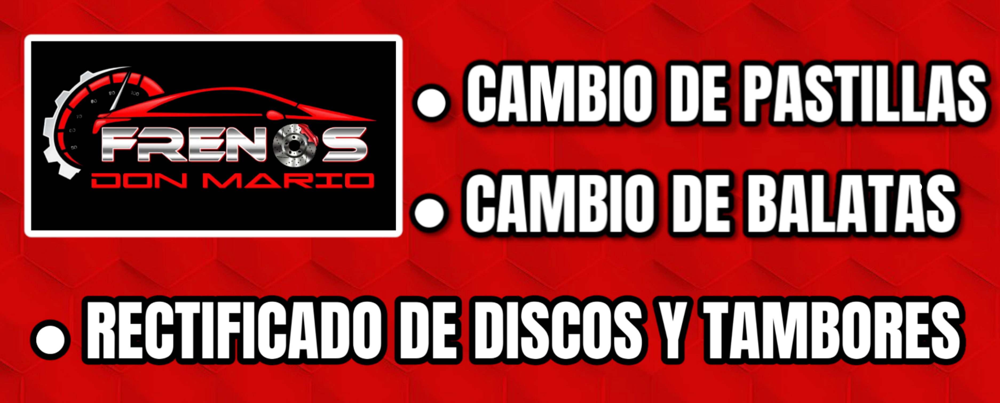
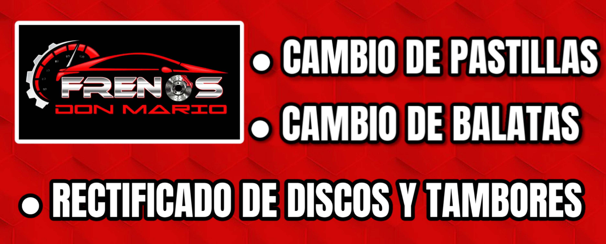
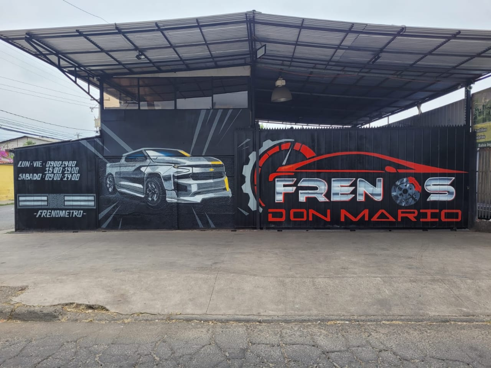

Nuestros Servicios
Descripción de los servicios ofrecidos.

Descripción de los servicios ofrecidos.
Rectificados de Discos Instalados.
Muy buena Calidad

Diferencias de Frenos

Bahia Inglesa 01512, Puente Alto
San Jose de La Estrella 1596, La Florida